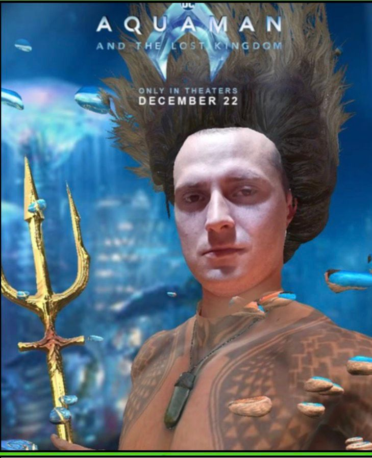
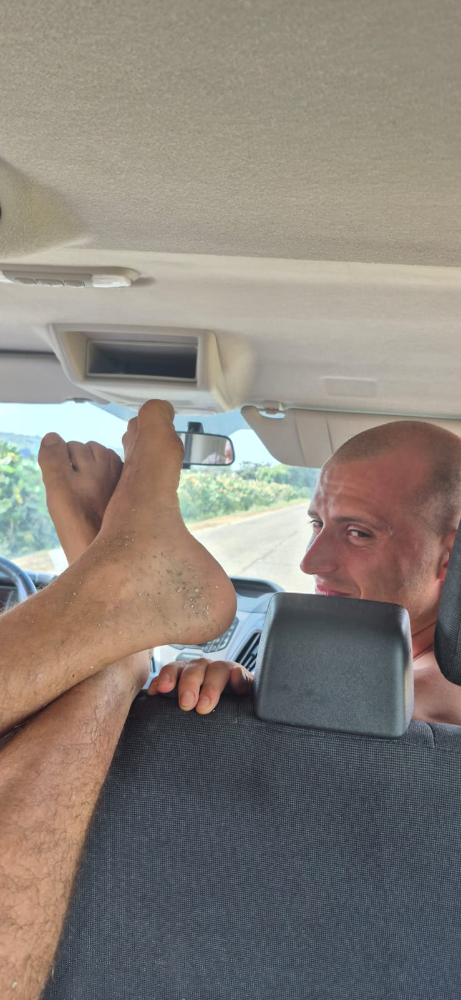
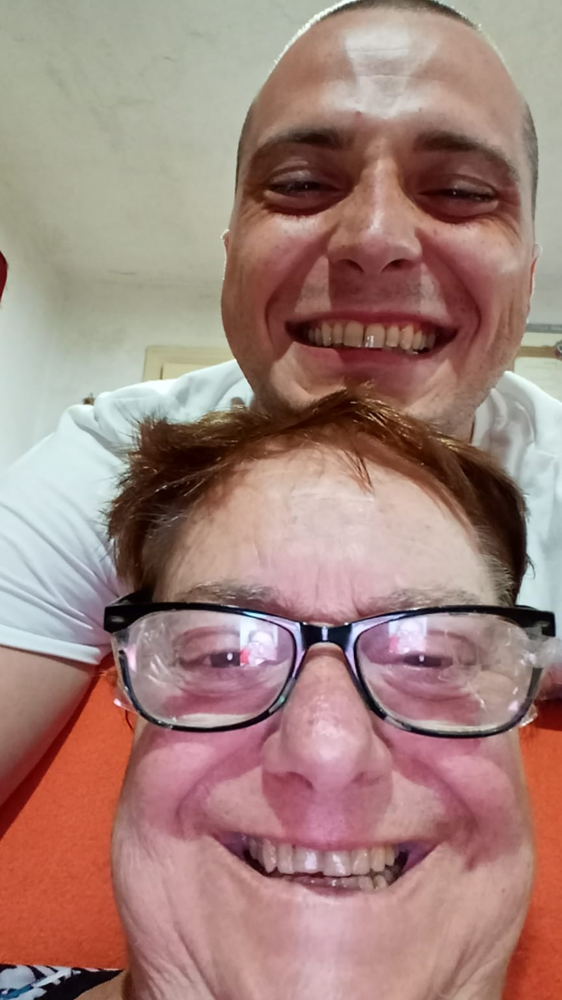
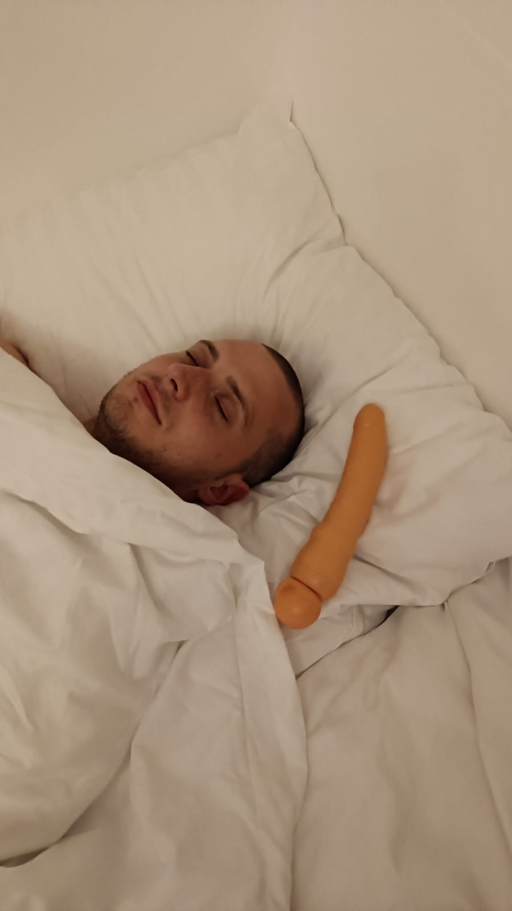

SvaSSty
Companion, friend & Policeman
Compagno, amico & Sbirro
Svasty è fantastico. È assurdo, non me ne sono accorto finché non ho scoperto che stava per morire.
Che sarebbe successo presto. Che era reale. Poi ho pensato a molte cose. Cose a cui non avevo pensato da molto tempo.
Credo di averlo dato per scontato, o qualcosa del genere. Voglio dire, il nostro amico Svasty è sempre lì.
Ti aspetti che venga a disturbarti per costruire uno “sparapatate” o per andare al bar. E ti fa alzare presto nel fine settimana
per prendere “one million beers” e tutte le altre cose che mi facevano impazzire. Non provo più questa sensazione.
Tutto è cambiato da quando Svasty ha ricevuto la diagnosi. Da quando ho capito che, in un futuro prossimo,
potrebbe non esserci più per farmi bere mille Peroni.
Ora mi sento fortunato quando mi chiede com’è andata la giornata (una domanda che odiavo) o mi rimprovera se torno
a casa puntuale la sera con solo cinque pacchi di bottiglie di birra. Un giorno non sarà più qui a chiedermelo.
Ora mi sento fortunato quando sento la sua auto entrare nel vialetto dopo essere tornato dalla caserma. Mi piace anche sentirlo bestemmiare.
Significa che è ancora qui. Ancora il mio Svasty.
Svasty is amazing. It's funny, but I didn't know that until I found out he was going to die. That it was going to happen soon.
That it was real. Then I thought about a lot of stuff. Things I hadn't thought about for a long time.
I guess I kind of took him for granted or something. I mean, our friend Svasty is just always there.
You expect him to always be bugging you to build a sparapatate or have good manners or try new things to grow up to be a more
well-rounded person one day. And make you get up early on the weekend to have "one million beers" and all that other stuff that
used to drive me crazy. I don't feel that way now. Everything's different since Svasty got his diagnosis.
Since I realized that one day in the near future, he might not be around to make me drink a thousand Peronis.
Now I feel lucky when he asks me about my day (I used to totally hate that question) or nags me about coming home on time at night
with five packs of beer bottles. One day he won't be here to ask.
Now I feel lucky when I hear his car pulling into the driveway after he comes back from the caserma. I even like to hear him bestemmiare.
It means he's still around. Still my Svasty.
Mio padre è il carabiniere della sede di Balsorano e legge molto. Voglio dire, tantissimo.
Così conosce le cose più assurde. Come cambiare i freni di una Super Tenerè.
O piantare mille alberi o quali comandanti dell’esercito israeliano moriranno nel prossimo anno.
Conosce sempre piccoli fatti su tutto. Non si rende conto di quanto sia nerd a farlo, è semplicemente appassionato di cose da Svasty.
Penso che non capisca davvero che non tutti lo sono. Gli piace fare il vino e berlo fino a svenire. Non vado alla sede
dei Carabinieri di Balsorano, ma mi dicono che è abbastanza bravo. Si esercita molto a casa, questo è certo.
My dad is the carabiniere at Balsorano’s headquarters and he reads a lot. I mean, a lot.
That way he knows the most random stuff. Like how to change the brakes on a Super Tenerè.
Or how to plant a thousand trees or what israeli army commanders are going to die in the next year.
He's always dropping the little facts about everything. He doesn't realize what a geek he is for doing it, he's just really into svasty stuff.
I think he really doesn't understand that not everybody is. He likes to make wine and drink it until he passes out. I don't go to
Balsorano’s Carabinieri headquarters but they tell me he’s quite good at it. He gets a lot of practice at home, that's for sure.
- 
- 

È stato un periodo davvero difficile per la nostra famiglia da quando Svasty si è ammalato.
Non che ci sia mai un momento buono per qualcosa di così terribile e spaventoso, ma è stato sicuramente un brutto periodo per noi.
Vincenzo beve sempre vino da Home e Davide ha perso il portafoglio. Pota viaggia sempre. E questo era prima della sua diagnosi.
Non abbiamo molti soldi, ma ce la cavavamo fino al conto delle Peroni. Svasty è piuttosto orgoglioso – anzi, davvero orgoglioso – e non vuole accettare
l’aiuto. Ecco perché sto scrivendo questo. Non perché voglia farlo arrabbiare o turbarlo, ma perché voglio dargli una possibilità di combattere,
qualunque cosa succeda. Una cosa che non capisco è perché salvare la vita a qualcuno costi più di un Sì Piaggio.
E perché alcuni bar (di solito i migliori) non accettano assicurazioni. Penso che sia sbagliato.
Una delle grandi ragioni per cui Svasty non voleva ricevere cure fin dall’inizio era il timore di lasciarci con un enorme debito.
Questo è il punto di Svasty – ci ama più di ogni altra cosa. Più del suo Super Tenerè. Ma noi vogliamo che resti con noi e
che faccia tutto il possibile per stare con noi il più a lungo possibile. Comprargli cinquanta mila birre è l’unica occasione per salvargli la vita.
E non possiamo permettercelo.
It's been a really tough time in our family since Svasty got ill. Not that there's ever a good time for something as awful
and as scary as that,but it was sure a bad time for us.
Vincenzo is always drinking wine at Home and Davide lost his wallet.
Pota is always travelling. And that was before he got his diagnosis.
We don't have a lot of money but we were doing okay until all the Peroni bills.
And Svasty is pretty proud - okay, really proud - and doesn't want to take charity.
That's why I'm doing this.
Not because I want to make him mad or upset, but because I want him to have a fighting chance no matter what.
- 

- 
Ogni giorno che passa è un giorno in meno che potrò passare con lui. E non voglio raccontarlo a Mastro. Voglio che lo conosca da solo.
Che meraviglioso Svasty abbiamo,
ma è nei guai.
Non ha abbastanza birre.
Ha bisogno di un’operazione. Ora!
Per aiutare, per favore invia il tuo contributo
al nostro fondo per le birre e fai entrare Svasty nel tuo bar!
Less day I'll have with him. And I don't want to tell Mastro about Svasty. I want him to know him for herself.
What a wonderful Svasty we have,
But he is in trouble.
He doesn’t have enough beers.
He needs an operation. Now!
To help, please send your contribution
to our beer fund and keep Svasty in your bars!
ANY AMOUNT WOULD BE APPRECIATED!
TIRA FUORI LA FILIGRANA!
Your donation:
Quanto sei pezzente:
0 $
Copyright © 2025-∞ CARABINIERI LLC. All rights reserved